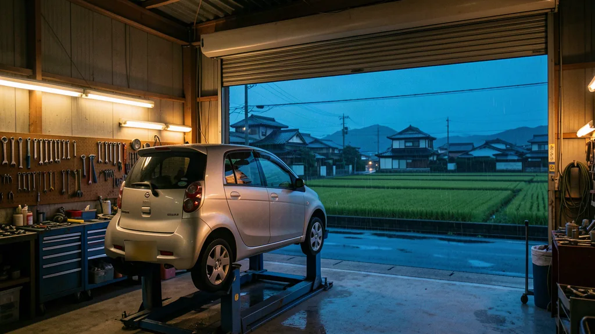
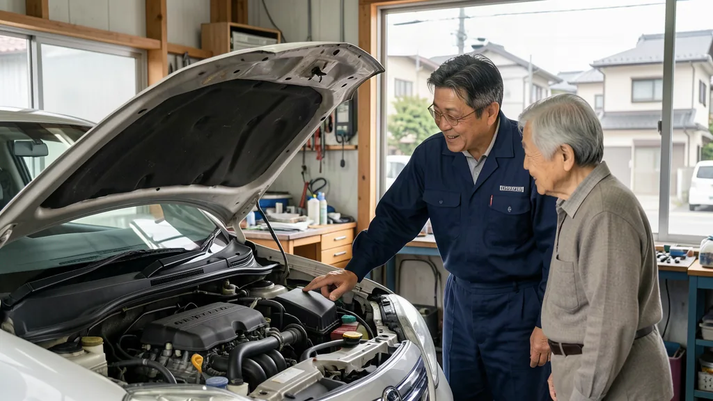
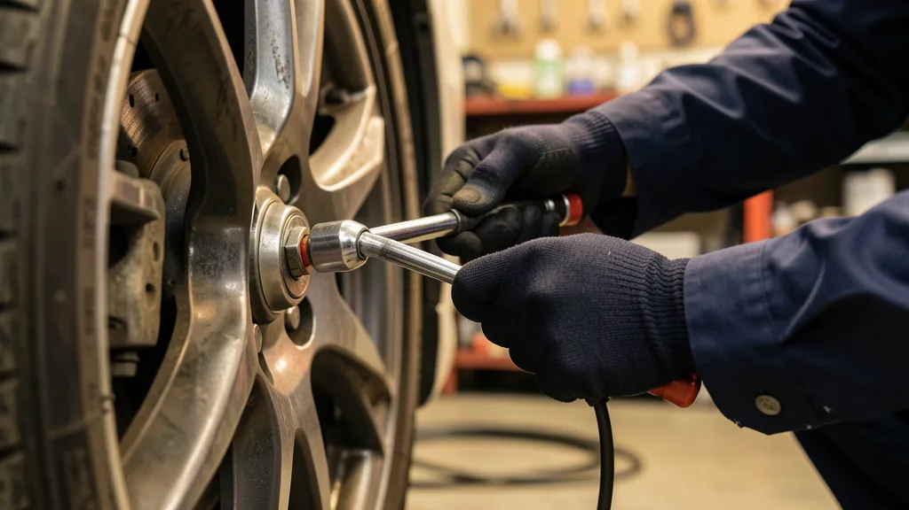

新潟市西蒲区の町の整備工場
直す前に、ちゃんと見せる。
外した部品と写真を、あなたの目の前に。
「いま直す」「次でいい」「まだ大丈夫」を、
いっしょに決めてから手を動かします。
- 01見積りの
外は直さない - 02外した部品は
お返しする - 03写真つきの
整備記録を渡す - 04代車は
無料
01見せる整備
点検の結果は、
三つの札で。
車を点検したら、気になった所すべてに札を付けて、写真といっしょにお見せします。直すかどうかを決めるのは、あなたです。

お客さまの車の前で、札の付いた所を一つずつ。
点検結果のお知らせNo. 2611-0428
軽自動車／平成30年式／走行 68,420km 見本
- 赤前のブレーキパッド残り 2.1mm（新品 10mm）¥9,800
- 赤ワイパーゴム切れて、拭き残しあり¥2,200
赤は、安全か車検に関わる所です。このままでは車検に通りません。
- 黄バッテリー能力 62%。冬の朝に弱りやすい¥14,300
- 黄タイヤ（後ろ2本）溝 3.4mm。雪の前に見直し¥18,600
- 黄エンジンオイルのにじみ量はわずか。次回また見ます—
黄は、いますぐでなくて大丈夫な所です。時期を決めて、こちらから声をかけます。
- 緑ライト・方向指示器すべて点灯
- 緑ブレーキ液量・色とも良好
- 緑足回りのブーツ破れなし
- 緑排気ガス基準内
- ほか 20項目
緑は、点検して問題のなかった所です。見た所も、すべて書いてお渡しします。
担当 整備士要 一真
02車検の目安
車検は、いくら？
先に、数字で。
車の大きさを選ぶと、車検の目安が出ます。国に納めるお金と、当店の料金を分けてお見せします。
車検の目安（税込）¥0
- 国に納めるお金重量税・自賠責・印紙
- 0
- 当店の料金24か月点検・検査・代行
- 0
部品の交換が要るときは、点検のあとに札と写真でお見せし、了解をいただいてから行います。
見本の数字です。実際の金額はお店に合わせて入れます。
04車検の流れ
朝あずけて、
夕方にはお渡し。
お預かり
気になることを伺います。代車にお乗り換え。
点検
56項目を見て、気になった所に札を付けます。
お電話で、札のご説明
写真をLINEでお送りして、直す所を一緒に決めます。
整備
決めた所だけを直します。
検査
ブレーキ・ライト・排気ガスを、検査の機械で確かめます。
お渡し
外した部品と、写真つきの整備記録をお渡しします。

05整備士
「最後のひと締めは、
必ず手で確かめる」
ナットは、決まった力で締めます。機械で締めたあとに、トルクレンチで一本ずつ。お客さまが見ていないところほど、手を抜かない。父の代から、それだけは変えていません。
二代目・一級整備士要 一真見本の人物です
06よくある質問
聞かれること。
よその店で買った車でも見てもらえますか？
はい。どこで買った車でも、国産車・輸入車どちらでも大丈夫です。
見積りのあとで断ってもいいですか？
もちろんです。見積りと点検の結果のご説明は無料です。札を見て、直す所だけを選んでください。
当日、車を持っていくだけでいいですか？
車検証と自賠責の証書、車の鍵をお持ちください。納税の確認は、こちらでします。
代車は本当に無料ですか？
はい。軽と普通車を用意しています。台数に限りがあるので、ご予約のときにお知らせください。
07ご予約
まずは、
見せてください。
お電話がいちばん早いです。作業中で出られないときは、こちらからかけ直します。
- 所在地
- 新潟市西蒲区〇〇 1-2-3 見本
- 目印
- 国道116号沿い、西蒲区役所から車で5分
- 営業
- 8:30〜18:00／日曜・祝日休み
- 駐車場
- 8台（大型車も可）